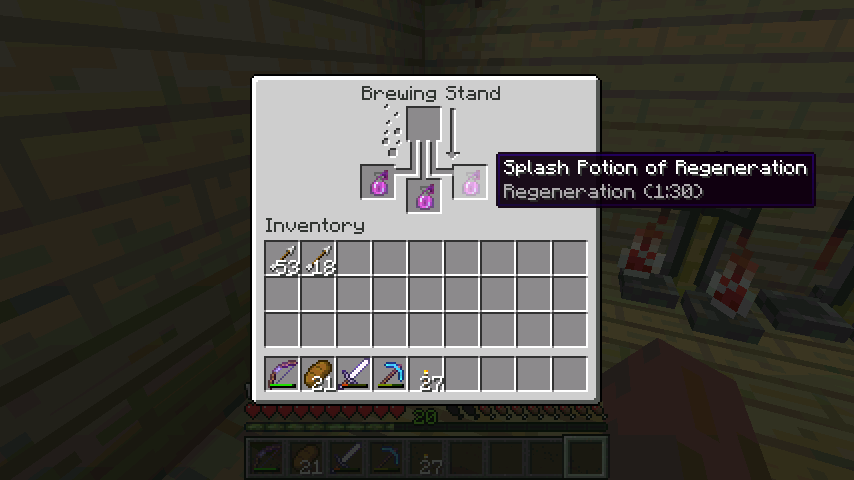
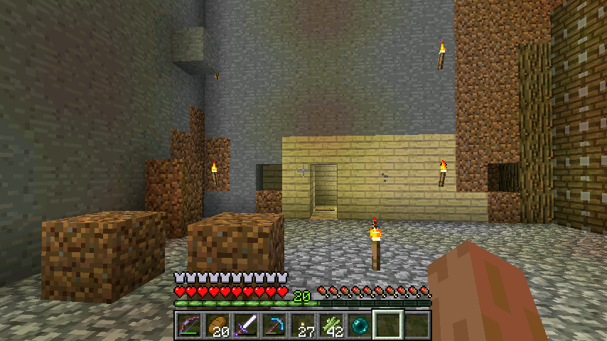

首页
上一页
104
105
106
107
108
109
109
110
111
112
113
114
下一页
末页
defanive2
无尽黑夜
14
收获的第一个眼泪
PS PowerIV的弓一击就干掉了
6822楼
2012-09-24 02:05
defanive2
无尽黑夜
14
结果这只没看到我，简单秒杀，又得到一个眼泪
6823楼
2012-09-24 02:08
defanive2
无尽黑夜
14
找到一只小的地狱史莱姆
PS 跳得好高啊
6824楼
2012-09-24 02:10
defanive2
无尽黑夜
14

基础药水+眼泪可以得到恢复药水，慢慢补血
加红石增加时长，再加火药变成可投掷药水
6827楼
2012-09-24 02:24
defanive2
无尽黑夜
14
现在的药水一览 = =
6828楼
2012-09-24 02:25
defanive2
无尽黑夜
14
正在收甘蔗，但是听到小黑的声音，于是跑到树场里面看
结果发现一只小黑正在搞破坏
PS 雷暴雨果然蛋疼，所有小黑都到处瞬移
6829楼
2012-09-24 02:26
defanive2
无尽黑夜
14

这时候只能用我了个去形容了。。
6830楼
2012-09-24 02:27
defanive2
无尽黑夜
14
好吧暂时先玩到这里，顺便总结一下炼药
6831楼
2012-09-24 02:27
defanive2
无尽黑夜
14
首先，水瓶是最基础的物品
通过水瓶+地狱孢子可以得到基础药水awkward potion
然后需要添加一个作用剂：烈焰膏（防火），糖（速度），金粒西瓜（瞬时补血），蜘蛛眼（中毒），眼泪（缓慢恢复），发酵蜘蛛眼（虚弱），烈焰粉（力量）
接下来，可以继续添加增效剂：红石（增长效用时间，降低效果），萤石（增强效果，降低效用时间），火药（变成可投掷药水），发酵蜘蛛眼（转换成腐败效果）
PS 发酵蜘蛛眼的转换效果：防火、速度->减速，瞬时补血、中毒->瞬时伤害，缓慢恢复、力量->虚弱
除了这种合成路线之外，还可以有另外一种合成路线，无需地狱孢子，但是只能合成虚弱药水
一般来说大家可以对照着表进行炼药就可以了
6832楼
2012-09-24 02:35
defanive2
无尽黑夜
14
最近的帖子经常被删，而且都是删的无缘无故
一直在投诉申请恢复帖子
连续3天了，如果是谁故意做的话，希望停止吧
这个帖子也就是个普通的直播，投诉也没什么意义
6844楼
2012-09-25 06:02
defanive2
无尽黑夜
14
好吧今天家庭换网络了，速度超级快！
于是把刷怪塔的视频传了个480p的到U2B
www.yout
[表情：拍砖]
ube.co[表情：拍砖]
m/wa[表情：拍砖]
tch?v=z0xrtH[表情：拍砖]
LyH7k
6846楼
2012-09-25 08:43
defanive2
无尽黑夜
14
前几天搞出了一种新型的BUD，目测应该还没有人做过出来于是刚刚录了视频简单制作了一下，渲染中一会传U2B然后传优酷
6858楼
2012-09-26 08:25
defanive2
无尽黑夜
14
好吧来解释一下我的新的动力铁轨BUD组吧
首先要理解动力铁轨的点亮问题
动力铁轨有和红石类似的性质，当有能源的时候就会点亮
而且会被周围有能源的动力铁轨点亮
但是我们要从本质上看到红石和动力铁轨的不同
动力铁轨更像是效应器，也就是说是基于方块更新的
当一个红石火炬插上去之后，会怎么样呢？
首先最左边的动力铁轨被更新，于是动力铁轨就判断是否受到能源，发现自己收到能源了，就把自己从不亮的动力铁轨变成了亮的动力铁轨
最左边的动力铁轨改变了，于是左起第二个动力铁轨也被更新，也判断到了能源在范围内，于是点亮自身，继续更新第三个铁轨
6862楼
2012-09-26 11:21
defanive2
无尽黑夜
14
动力铁轨只能保持9格信号，超过9格之后就无法继续点亮了
6863楼
2012-09-26 11:22
defanive2
无尽黑夜
14
接下来就到了精华的部分了，如图这样摆设好动力铁轨和能量源
PS 红石火炬我没有直接摆在铁轨旁边是因为截图看不清楚而且
注意，在铁块上的铁轨表示可以被最左边的红石火炬点亮
如果这个时候打掉第二个红石火把，会怎么样呢？
6864楼
2012-09-26 11:26
defanive2
无尽黑夜
14
相信很多人都会这样分析：
只有在铁块上的动力铁轨才能收到最左边火炬的信号
在草地上的动力铁轨的信号是来源于右边的红石火炬的
因此如果右边的红石火炬被打掉了，自然草地上的动力铁轨就会熄灭
但是事实不是这样，打掉了红石火炬之后，草地上的动力铁轨仍然亮着！
正确的分析应该是这样：
由于动力铁轨是基于方块更新的，因此打掉红石火炬之后，就会更新红石附近2格范围内的动力铁轨，也就是图中熄灭的红石线上面的3个动力铁轨
于是这3个动力铁轨被更新了，但是注意，他们能够接受到最左边的红石火炬的信号，因此仍然保持亮着的状态
这3个动力铁轨尽管被更新了，他们发现虽然少了一个信号源，但是仍然是有信号的，于是就保持亮着的状态
既然这3个动力铁轨没有改变，那么就不会触发周围的动力铁轨更新
也就是说，草地上的动力铁轨一个都没有被更新！
所以说，尽管草地上的动力铁轨没有信号了，但是他们都没有被更新，于是无法认识到信号源已经消失了，继续保持亮着的状态
6866楼
2012-09-26 11:32
defanive2
无尽黑夜
14
此时就可以实现所谓的BUD效果了
一旦任何方块更新导致了这些草地上的动力铁轨被更新，他们马上就会意识到，信号源已经消失了
虽然是后知后觉，草地上的动力铁轨也会马上熄灭
所以说，在这里我放置了一个方块，所有草地上的动力铁轨都熄灭了
6867楼
2012-09-26 11:33
defanive2
无尽黑夜
14
于是将这个想法拓充，就做出了这种动力铁轨的BUD群组
优点有：
1、每个感应器只有1x1x4
2、可以无限延伸
3、无论有多少个感应器，只需要一个活塞作为总BUD
4、可以把除了感应器意外的部分都隐藏起来
6868楼
2012-09-26 11:36
defanive2
无尽黑夜
14
视频
里面最后有一个自动收割的西瓜场（但是没有水流收集系统）
个人认为是目前最美观、面积利用率最高的的自动收割西瓜场了
6869楼
2012-09-26 11:37
defanive2
无尽黑夜
14
生日了唉！不过天朝时间生日已经过了5个小时了…不管怎么样祝自己18生日快乐
7073楼
2012-10-02 04:39
defanive2
无尽黑夜
14
谢谢大家的祝福
最近学业很忙，没时间碰电脑直播也做不了
有一个新型史莱姆场的想法，不过没时间实践
PS 谢谢大家的生日快乐！
7083楼
2012-10-02 11:59
defanive2
无尽黑夜
14
好吧今天终于有时间了，来打一会MC
7129楼
2012-10-07 07:22
defanive2
无尽黑夜
14
附魔铁剑快坏了，来刷一小会经验然后附魔个剑
7130楼
2012-10-07 07:25
defanive2
无尽黑夜
14
之前在刷怪塔刷的一大堆物品，取10组火药，准备造2组TNT
7132楼
2012-10-07 07:32
defanive2
无尽黑夜
14
附魔铁剑。。结果十分无语。。
7133楼
2012-10-07 07:34
defanive2
无尽黑夜
14
TNT耶
7134楼
2012-10-07 07:36
defanive2
无尽黑夜
14
换下钻石套，换上铁装，准备去地狱
去地狱干什么呢？
7135楼
2012-10-07 07:39
defanive2
无尽黑夜
14
历尽千辛万苦终于到达了这个地方了
一个非常大的岩浆湖
目测清理完周围的一些问题后，可以做出一个效率可观的刷怪塔
7136楼
2012-10-07 07:54
defanive2
无尽黑夜
14
前方是一个比较大型的堡垒
简单目测了一下，马克了岩浆湖的中心，(x,z)=(540,-100)
现在看F3的entity总数，只有36个
可见岩浆湖已经很大功劳了
接下来把周围240x240都尽量清理
这个时候TNT就是好帮手了啊
7141楼
2012-10-07 08:03
defanive2
无尽黑夜
14
没装备了于是一路跑回家
途中见到一只大的地狱史莱姆！
比较少见
PS 给MC装了OptiFine，也算是个MOD
但是主要作用是修改视觉效果等等，对游戏没有实际影响
所以说还是算纯净的原版直播
用OF改了一些渲染设置之后，感觉快多了
稍微奇怪的是，Chunk Loading使用Multi-Core的时候，对于已生成的chunk加载速度很快
但是对于新探索生成的chunk会非常卡
不管了，反正现在装了OF之后地狱快多了，最起码能不开和平了
之前地狱不开和平简直卡得1B根本玩不了。。
7144楼
2012-10-07 08:18
首页
上一页
104
105
106
107
108
109
109
110
111
112
113
114
下一页
末页